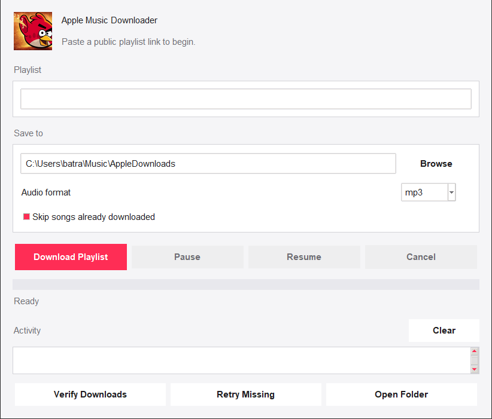
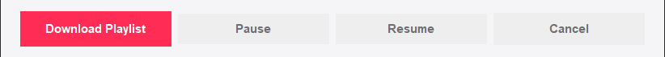
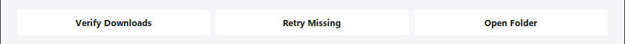

Paste a public Apple Music playlist link and keep the audio as numbered files. It reads the track list from the playlist, matches each song on YouTube, and writes the audio into the folder you pick.
Python 3.10 or newer · macOS and Windows · Free

MP3 for everyday listening, or WAV when you want the audio left untouched. Converting to MP3 is the only step in the whole run that needs FFmpeg, so WAV works on a machine that has nothing but Python.
A long playlist does not have to finish in one sitting. Pause the run, resume it later, or cancel it outright: the songs already written are left exactly where they are.

One button checks that every expected song is present, and another retries only the tracks that came out missing or incomplete. Anything that could not be matched is written to failed_downloads.txt, and a verification leaves verification_report.txt next to the audio.

Point it at the same folder twice and it fills only the gaps. Finished songs are recognised and left alone, so a run that died halfway through costs you the rest of the playlist, not the whole of it.
The downloading is yt-dlp's work, and the conversion is FFmpeg's. What the app adds is everything around them: reading the playlist, matching each track, numbering the files, and keeping a long run resumable.
Both setup scripts do the whole job: the dependency, the encoder, and a private environment for the app to live in. After that it is a double-click.
Run python3 --version to check.
bash setup/install_mac.sh
Installs Homebrew and FFmpeg if they are missing, builds .venv, installs yt-dlp.
Apple Music Downloader.command.Run python --version to check.
setup\install_windows.bat.
Installs the requirements, and FFmpeg through winget if it is missing.
Apple Music Downloader.bat.By hand, either system:
python -m pip install -r requirements.txt
python app.py
The whole app is one repository. Fork it, break it, fix it, ship it.
Open the repository on GitHub